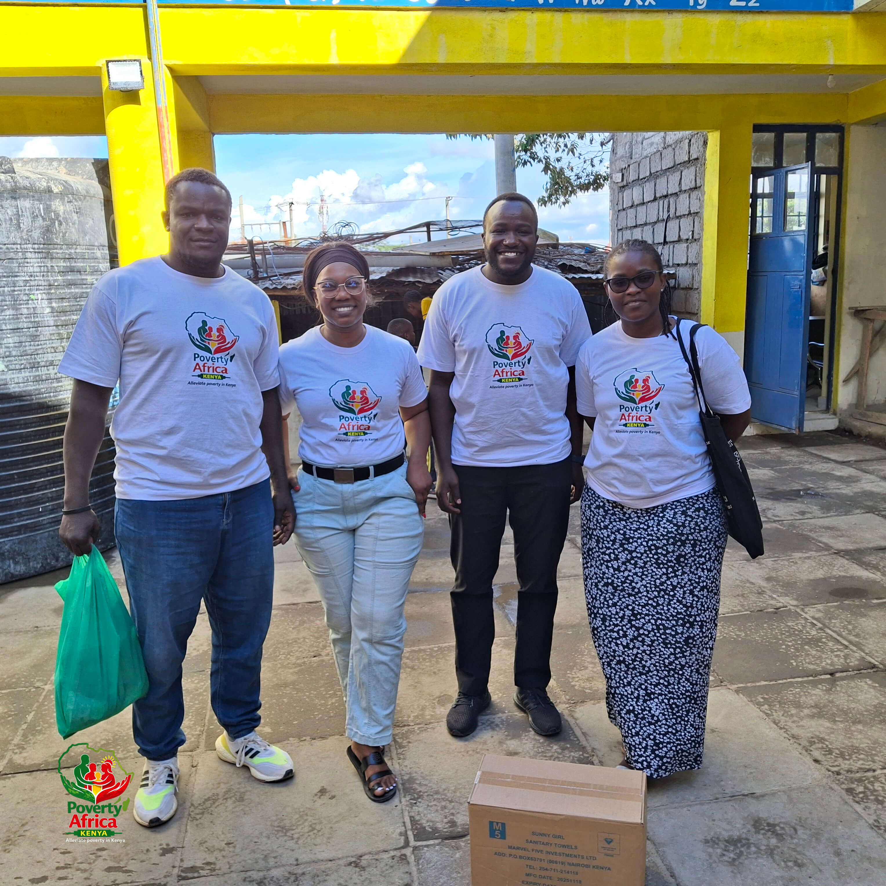

POAK
Poverty Africa - Kenya
Community-centered nonprofit fighting poverty across Kenya since 1997.
Poverty Africa - Kenya
Community-centered nonprofit fighting poverty across Kenya since 1997.
POAK (Poverty Africa - Kenya) is a community-centered nonprofit organization fighting poverty across Kenya. We empower vulnerable communities through sustainable development initiatives, capacity building, and strategic partnerships.
Founded in 1997, we've spent over 28 years working alongside Kenyan communities to create lasting change and improve living standards.

Kiambiu Pad Initiative, 27th Mar 2026Four core initiatives driving community transformation
Digital skills training and scholarship support to unlock learning and career opportunities.
Financial literacy and economic empowerment for both men and women.
Boys for Boys & Girls for Girls – mentorship, safe spaces, and life skills.
Holistic wellness combining mental health support and nutrition education.
Kenyans Empowered
Communities Reached
Counties Served
Girls Supported
"POAK's Girls for Girls program helped me stay in school. The sanitary pads and mental health workshops changed my life."
Your donation helps us fight poverty across Kenya. 100% of funds support our programs.
Donate via M-PESA